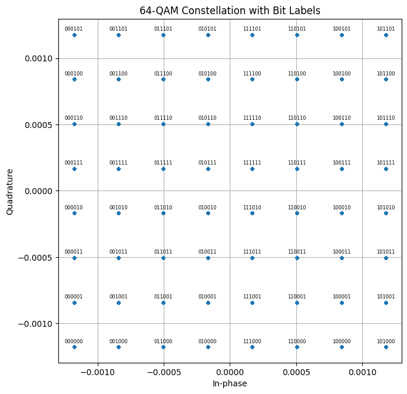
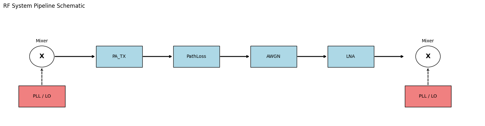
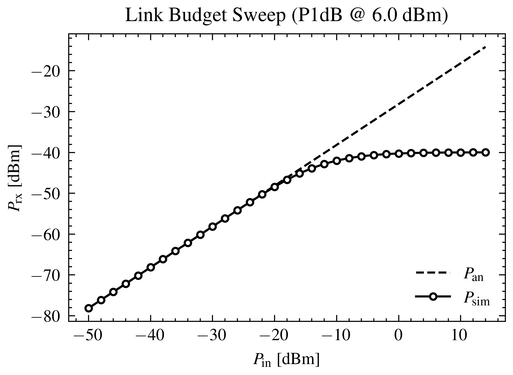
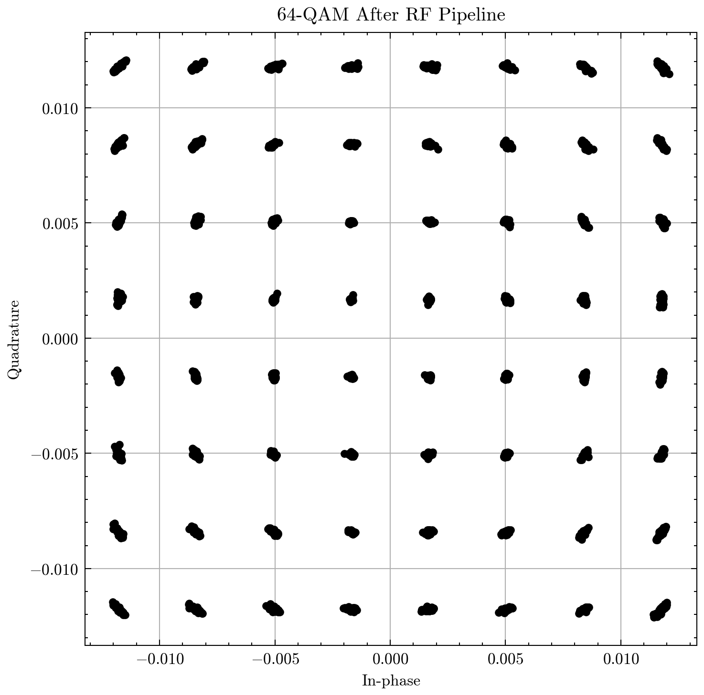
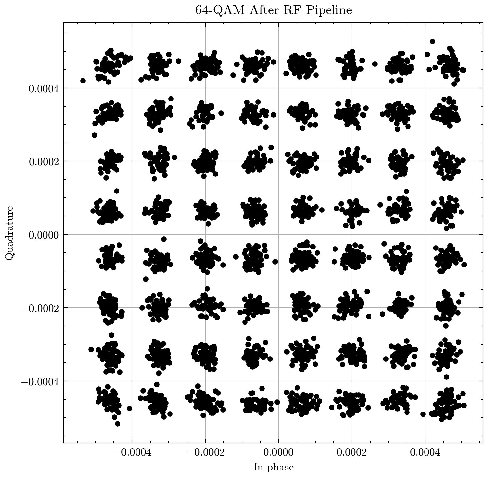
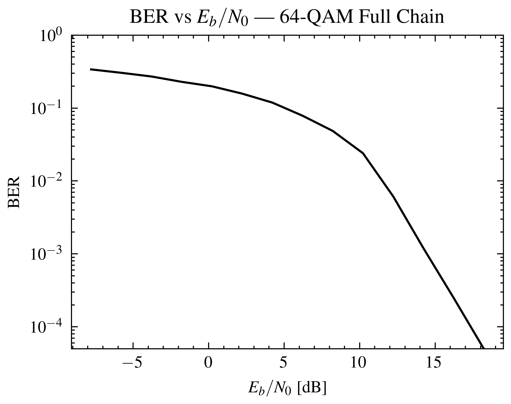

Performance Verification#
# Standard library
import numpy as np
import matplotlib.pyplot as plt
# RFModel core
from rfmodel.core.signal import Signal
from rfmodel.core.pipeline_builder import pipeline_from_config
from rfmodel.core.config import load_yaml
# Comms
from rfmodel.comms.pseudorandom_NGR import PRBSBitSource, PRBSParams
from rfmodel.comms.QAM_modulator import QAMModulator, QAMParams
from rfmodel.comms.OFDM_block import OFDMModulator, OFDMParams
from rfmodel.plot_utils.plot_block_diagram import plot_pipeline
# Plot utilities
from rfmodel.plot_utils import (
plot_bits,
plot_constellation,
plot_constellation_with_bits,
plot_ofdm_frequency_bins_centered,
plot_time_signal,
plot_spectrum,
reconstruct_one_ofdm_symbol_freq,
)
# Registries
import rfmodel.rf.registry
import rfmodel.channel.registry
Input Generation#
# --------------------------------------------------
# Parameters
# --------------------------------------------------
M = 64 #QAM modulation
bits_per_symbol = int(np.log2(M)) # 6 Bits for 64-QAM
fs_hz = 20e6 # Channel Bandwidth
n_fft = 64 # FFT Size
cp_len = 16 # Cyclic Prefix Length
n_data_subcarriers = 52 # Number of true data subcarriers
num_ofdm_symbols = 64 # Number of Symbols
n_qam_symbols_transmitted = num_ofdm_symbols * n_data_subcarriers # Actual Transmitted QAM Symbols
# --------------------------------------------------
# Generate bits (Pseudo Random)
# --------------------------------------------------
dummy_sig = Signal(x=np.array([], dtype=np.uint8), fs_hz=fs_hz, meta={"name": "PRBS15 Input Bits"})
prbs_gen = PRBSBitSource(
name="tx_bits",
params=PRBSParams(
order=15,
n_bits=n_qam_symbols_transmitted * bits_per_symbol,
seed=123,
),
)
sig_bits = prbs_gen.process(dummy_sig)
bits = sig_bits.x
print("Number of bits:", len(bits))
print("Expected QAM symbols:", n_qam_symbols_transmitted)
print("Bits per symbol:", bits_per_symbol)
print(sig_bits.meta)
plot_bits(bits, n_bits=500, title="Random input bits")
Number of bits: 19968
Expected QAM symbols: 3328
Bits per symbol: 6
{'name': 'PRBS15 Input Bits', 'source': 'PRBS15', 'prbs_order': 15, 'n_bits': 19968, 'seed': 123}

Allocate symbols to QAM and OFDM#
# --------------------------------------------------
# QAM modulation
# --------------------------------------------------
qam = QAMModulator(
"qam1",
QAMParams(
M=M,
gray_map=False,
unit_average_power=True,
)
)
sig_qam = qam.process(sig_bits)
qam_symbols = sig_qam.x
# --------------------------------------------------
# OFDM modulation
# --------------------------------------------------
ofdm = OFDMModulator(
"ofdm1",
OFDMParams(
n_fft=n_fft,
cp_len=cp_len,
n_data_subcarriers=n_data_subcarriers,
normalize_ifft=True,
null_dc=True,
)
)
sig_ofdm = ofdm.process(sig_qam)
tx_input = sig_ofdm.x
print("OFDM output samples:", len(tx_input))
print("Expected samples:", num_ofdm_symbols * (n_fft + cp_len))
OFDM output samples: 5120
Expected samples: 5120
from rfmodel.core.units import dbm_to_w
# Define your target input power to the LNA/Pipeline
input_pwr_dbm = -30
current_w = np.mean(np.abs(sig_ofdm.x) ** 2)
target_w = dbm_to_w(input_pwr_dbm)
scaling_factor = np.sqrt(target_w / current_w)
sig_ofdm_normalized = sig_ofdm.copy_with(x= sig_ofdm.x * scaling_factor)
actual_pwr_watts = np.mean(np.abs(sig_ofdm_normalized.x)**2)
actual_pwr_dbm = 10 * np.log10(actual_pwr_watts) + 30
print(f"Target Power: {input_pwr_dbm} dBm")
print(f"Actual Scaled Power: {actual_pwr_dbm:.2f} dBm")
plot_constellation_with_bits(
symbols=ofdm.demodulate(sig_ofdm_normalized).x,
bits=bits,
bits_per_symbol=bits_per_symbol,
title="64-QAM Constellation with Bit Labels",
science=False,
fig_scale=2)
Target Power: -30 dBm
Actual Scaled Power: -30.00 dBm

PipeLine Initiation#
cfg = load_yaml(r".\Tx_channel_Rx.yaml")
pipe = pipeline_from_config(cfg)
mixer_tx = pipe.get("mixer_and_pll_TX")
mixer_tx.params.mixer_ideal = False
mixer_tx.params.pll.enable_ofdm_weighting = True
mixer_rx= pipe.get("mixer_and_pll_RX")
mixer_rx.params.mixer_ideal = False
mixer_rx.params.pll.enable_ofdm_weighting = True
plot_pipeline(pipe)
output_sig, taps = pipe.run(sig_ofdm_normalized, taps=["PA_TX", "PathLoss", "AWGN", "LNA"])
print(f"Input Peak: {np.max(np.abs(sig_ofdm_normalized.x)):.6f}")
for block_name, signal in taps.items():
peak = np.max(np.abs(signal.x))
print(f"Peak after {block_name:8}: {peak:.6f}")

Input Peak: 0.003194
Peak after PA_TX : 0.031747
Peak after PathLoss: 0.000124
Peak after AWGN : 0.000125
Peak after LNA : 0.001252
Performance Evaluation#
Link budget — simulated power per block#
blocks = {b["name"]: b["params"] for b in cfg["pipeline"]}
c0 = 299792458.0
# Gains/losses in dB
G_mix_tx = blocks["mixer_and_pll_TX"]["gain_db"]
G_pa = blocks["PA_TX"]["gain_db"]
G_lna = blocks["LNA"]["gain_db"]
G_mix_rx = blocks["mixer_and_pll_RX"]["gain_db"]
# Path loss (Friis) in dB
p = blocks["PathLoss"]
lam = c0 / float(p["freq_hz"])
L_path = 10 * np.log10((lam / (4 * np.pi * p["distance_m"]))**2) + p["tx_ant_gain_db"] + p["rx_ant_gain_db"]
# Stage-by-stage addition
P_in = input_pwr_dbm
P_mix1 = P_in + G_mix_tx
P_pa = P_mix1 + G_pa
P_path = P_pa + L_path
P_awgn = P_path + 0.0
P_end = P_awgn
print("P_in =", P_in, "dBm")
print("Mixer TX =", P_mix1, "dBm")
print("PA_TX =", P_pa, "dBm")
print("PathLoss =", P_path, "dBm")
print("Prx =", P_end, "dBm")
P_in = -30 dBm
Mixer TX = -30 dBm
PA_TX = -10.0 dBm
PathLoss = -58.14778322188338 dBm
Prx = -58.14778322188338 dBm
def p_dbm(x):
return 10 * np.log10(np.mean(np.abs(x) ** 2)) + 30
tap_names = ["mixer_and_pll_TX", "PA_TX", "PathLoss", "AWGN", "LNA", "mixer_and_pll_RX"]
print(p_dbm(sig_ofdm_normalized.x))
_, taps = pipe.run(sig_ofdm_normalized, taps=tap_names)
print("P_in =", p_dbm(sig_ofdm_normalized.x), "dBm")
print("Mixer TX =", p_dbm(taps["mixer_and_pll_TX"].x), "dBm")
print("PA_TX =", p_dbm(taps["PA_TX"].x), "dBm")
print("PathLoss =", p_dbm(taps["PathLoss"].x), "dBm")
print("AWGN =", p_dbm(taps["AWGN"].x), "dBm")
print("P_rx =", p_dbm(taps["AWGN"].x), "dBm")
-30.0
P_in = -30.0 dBm
Mixer TX = -30.00001929458142 dBm
PA_TX = -10.003462222633487 dBm
PathLoss = -58.15124544451686 dBm
AWGN = -58.1465150491488 dBm
P_rx = -58.1465150491488 dBm
# --- Summary: analytical vs simulated link budget -----------------------
rows = [
("P_in", P_in, p_dbm(sig_ofdm_normalized.x)),
("Mixer TX", P_mix1, p_dbm(taps["mixer_and_pll_TX"].x)),
("PA_TX", P_pa, p_dbm(taps["PA_TX"].x)),
("PathLoss", P_path, p_dbm(taps["PathLoss"].x)),
("AWGN", P_path, p_dbm(taps["AWGN"].x)),
("P_rx", P_end, p_dbm(taps["AWGN"].x)),
]
print("Stage P_an [dBm] P_sim [dBm] Δ [dB]")
for name, an, sim in rows:
print(f"{name:<10} {an:>10.2f} {sim:>10.2f} {sim - an:>+7.2f}")
Stage P_an [dBm] P_sim [dBm] Δ [dB]
P_in -30.00 -30.00 +0.00
Mixer TX -30.00 -30.00 -0.00
PA_TX -10.00 -10.00 -0.00
PathLoss -58.15 -58.15 -0.00
AWGN -58.15 -58.15 +0.00
P_rx -58.15 -58.15 +0.00
import scienceplots # noqa: F401
p_in_sweep_dbm = np.arange(-50.0, 15.0, 2.0)
G_tot_db = P_end - P_in # analytical, up to P_rx (AWGN tap)
current_w = np.mean(np.abs(sig_ofdm.x) ** 2)
p_rx_sim = []
p_rx_an = []
for pin in p_in_sweep_dbm:
scale = np.sqrt(dbm_to_w(pin) / current_w)
s_in = sig_ofdm.copy_with(x=sig_ofdm.x * scale)
_, taps_sw = pipe.run(s_in, taps=["AWGN"]) # stop at the receive antenna
p_rx_sim.append(10 * np.log10(np.mean(np.abs(taps_sw["AWGN"].x) ** 2)) + 30)
p_rx_an.append(pin + G_tot_db)
p_rx_sim = np.array(p_rx_sim)
p_rx_an = np.array(p_rx_an)
delta = p_rx_sim - p_rx_an
with plt.style.context(['science', 'ieee']):
fig, ax1 = plt.subplots(figsize=(3.5, 2.6))
l1, = ax1.plot(p_in_sweep_dbm, p_rx_an, color='k', linestyle='--',
label=r'$P_\mathrm{an}$')
l2, = ax1.plot(p_in_sweep_dbm, p_rx_sim, color='k', linestyle='-',
marker='o', markersize=3, markerfacecolor='white',
label=r'$P_\mathrm{sim}$')
ax1.set_xlabel(r'$P_\mathrm{in}$ [dBm]')
ax1.set_ylabel(r'$P_\mathrm{rx}$ [dBm]')
ax1.legend(handles=[l1, l2], frameon=False, loc='lower right')
plt.title(f"Link Budget Sweep (P1dB @ {blocks['PA_TX']['p1db_out_dbm']} dBm)")
plt.tight_layout()
plt.show()

EVM#
output_sig, taps = pipe.run(sig_ofdm_normalized, taps=["PA_TX", "PathLoss", "AWGN", "LNA"])
_, taps = pipe.run(sig_ofdm_normalized, taps=["PA_TX"])
sig_demod = ofdm.demodulate(taps["PA_TX"])
plot_constellation(
sig_demod.x,
title="64-QAM After RF Pipeline",
science=True,
fig_scale=2,
)
sig_pa = taps["PA_TX"]
sig_pa_demod = ofdm.demodulate(sig_pa)
rx = sig_pa_demod.x
tx = qam_symbols
# Normalize rx to same power as ideal reference
rx_norm = rx * np.sqrt(np.mean(np.abs(tx)**2) / np.mean(np.abs(rx)**2))
error = rx_norm - tx
evm_rms = np.sqrt(np.mean(np.abs(error)**2) / np.mean(np.abs(tx)**2)) * 100
print(f"TX EVM (RMS): {evm_rms:.2f} %")
print(f"TX EVM (RMS): {20 * np.log10(evm_rms / 100):.2f} dB")

TX EVM (RMS): 1.17 %
TX EVM (RMS): -38.66 dB
sig_out, taps = pipe.run(sig_ofdm_normalized)
sig_demod = ofdm.demodulate(sig_out)
plot_constellation(
sig_demod.x,
title="64-QAM After RF Pipeline",
science=True,
fig_scale=2,
)
rx = sig_demod.x
tx = qam_symbols
rx_norm = rx * np.sqrt(np.mean(np.abs(tx)**2) / np.mean(np.abs(rx)**2))
error = rx_norm - tx
evm_rms = np.sqrt(np.mean(np.abs(error)**2) / np.mean(np.abs(tx)**2)) * 100
print(f"TX EVM (RMS): {evm_rms:.2f} %")
print(f"TX EVM (RMS): {20 * np.log10(evm_rms / 100):.2f} dB")

TX EVM (RMS): 5.71 %
TX EVM (RMS): -24.86 dB
BER#
from scipy.special import erfc
sig_ber_out, ber_taps = pipe.run(sig_ofdm_normalized, taps=["PathLoss", "AWGN"])
rx_syms = ofdm.demodulate(sig_ber_out).x
rx_syms_norm = rx_syms / np.sqrt(np.mean(np.abs(rx_syms) ** 2))
# --- Count bit errors ------------------------------------------------------
Bits_rx = qam.demap(rx_syms_norm)
if len(Bits_rx) != len(sig_bits.x):
print("ERROR: length mismatch — cannot compute BER")
else:
errors = sig_bits.x ^ Bits_rx
error_count = int(np.sum(errors))
ber_sim = error_count / len(sig_bits.x)
# --- SNR at receiver (PathLoss tap = signal only, AWGN tap = signal+noise)
noise = ber_taps["AWGN"].x - ber_taps["PathLoss"].x
sig_pwr = np.mean(np.abs(ber_taps["PathLoss"].x) ** 2)
nse_pwr = np.mean(np.abs(noise) ** 2)
snr_lin = sig_pwr / nse_pwr
snr_db = 10 * np.log10(snr_lin)
ebn0_lin = snr_lin / bits_per_symbol # Eb/N0 = Es/N0 / log2(M)
ebn0_db = 10 * np.log10(ebn0_lin)
print(f"Errors: {error_count} / {len(sig_bits.x)} bits")
print(f"BER (sim): {ber_sim:.4e} ({ber_sim*100:.3f} %)")
print(f"SNR (rx): {snr_db:.2f} dB")
print(f"Eb/N0: {ebn0_db:.2f} dB")
Errors: 3 / 19968 bits
BER (sim): 1.5024e-04 (0.015 %)
SNR (rx): 24.90 dB
Eb/N0: 17.11 dB
import scienceplots # noqa: F401
awgn_block = pipe.get("AWGN")
snr_saved = awgn_block.params.snr_db
snr_sweep_db = np.arange(0, 30, 2)
ebn0_sweep_db = snr_sweep_db - 10 * np.log10(bits_per_symbol)
ebn0_list = []
ber_list = []
for snr_db, ebn0_db in zip(snr_sweep_db, ebn0_sweep_db):
awgn_block.params.snr_db = snr_db
sig_out, _ = pipe.run(sig_ofdm_normalized)
rx_norm = ofdm.demodulate(sig_out).x
rx_norm = rx_norm / np.sqrt(np.mean(np.abs(rx_norm) ** 2))
n_err = int(np.sum(sig_bits.x ^ qam.demap(rx_norm)))
if n_err > 0:
ebn0_list.append(ebn0_db)
ber_list.append(n_err / len(sig_bits.x))
awgn_block.params.snr_db = snr_saved
with plt.style.context(['science', 'ieee']):
fig, ax = plt.subplots(figsize=(3.5, 2.8))
ax.semilogy(ebn0_list, ber_list, color='k', linestyle='-')
ax.set_xlabel(r'$E_b/N_0$ [dB]')
ax.set_ylabel('BER')
ax.set_ylim([ber_list[-1], 1])
plt.title('BER vs $E_b/N_0$ — 64-QAM Full Chain')
plt.tight_layout()
plt.show()
